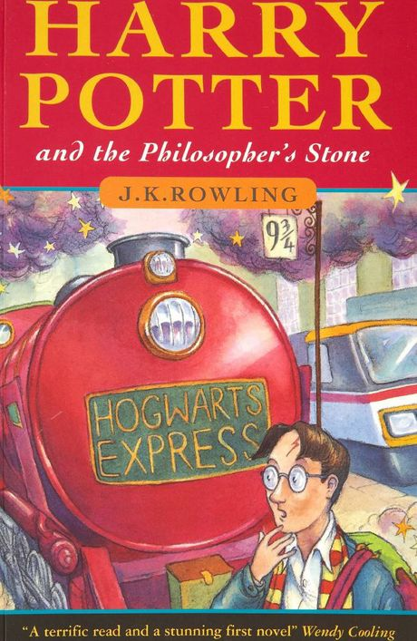

Harry Potter: What you didn’t know
TWENTY-ONE years ago, a single mum living on welfare penned a story on a train which would go on to become one of the best-selling books of all time.
But publishers were doubtful about the idea of J.K. Rowling's wizardry world.
After receiving "loads" of rejections, Bloomsbury - a publishing house in London - finally gave Harry Potter and the Philosopher's Stone the green light in 1997, paying the author a £2500 ($A4482) advance, and printing just 500 copies.
Her series of seven books has since sold 450 million copies, won dozens of awards, been made into eight wildly popular movies, and turned Rowling into a billionaire.
To celebrate the 21st anniversary of the first release of Harry Potter and the Philosopher's Stone, here are some facts about the book you may not have known.

ROWLING'S DEATH APOLOGIES
Rowling has started something of a tradition: each year on May 2 - the anniversary of the Battle of Hogwarts - she apologises for the death of one of the series' most beloved characters.
Already, she's apologised for deaths including Remus Lupin, Nymphadora Tonks, Fred Weasley and Dobby the house elf.
In particular, Lupin's death is still a sore subject for fans. Many fell in love with the werewolf, nicknamed Moony, who was known as one of the Marauders at Hogwarts alongside James Potter, Sirius Black and Peter Pettigrew.
Rowling told one fan who tweeted that Lupin "is and always will be my favourite character in the Harry Potter universe" that it was "the best tribute he could have".